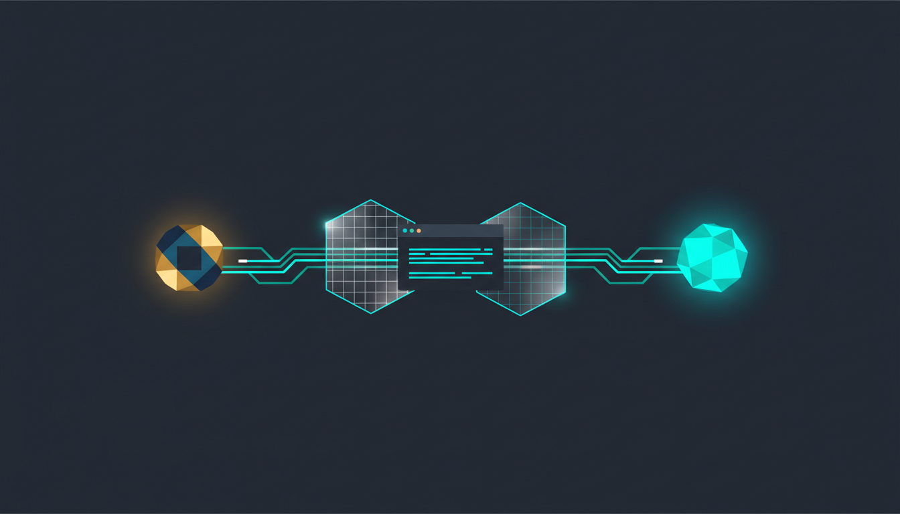
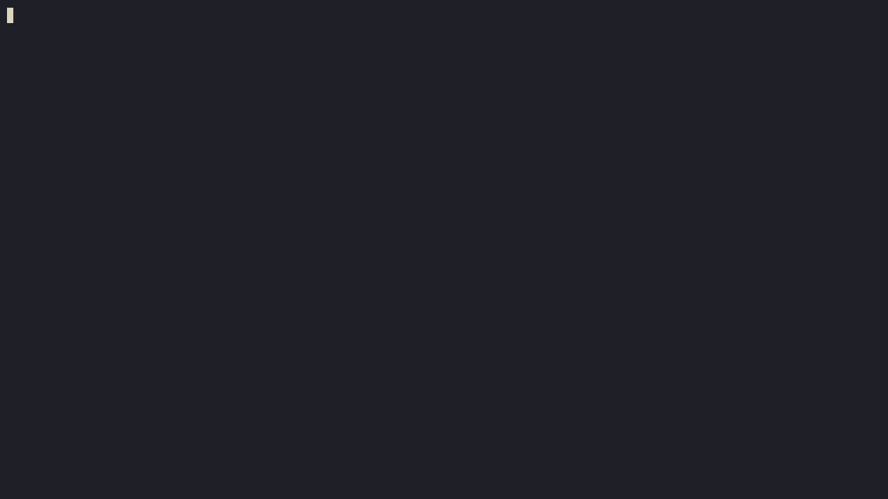
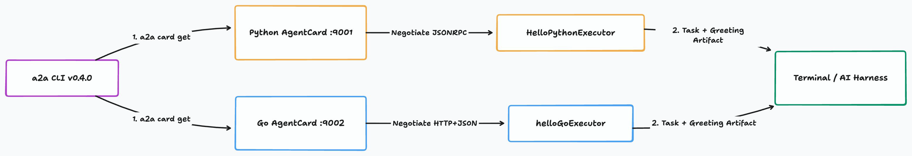
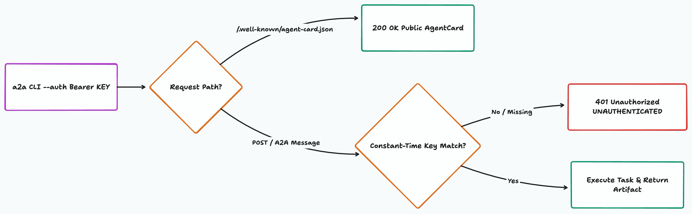

Meet A2A CLI: A Hello World & API Key Auth Guide in Python and Go
TL;DR
Think of a2a-cli (a2a) as curl for Agent-to-Agent (A2A) servers. Point it at any A2A URL, and it fetches the Agent Card, picks the transport (JSONRPC, HTTP+JSON, or gRPC), and sends your message. You can drive it from your terminal or from any AI coding tool (Claude Code, Cursor, Codex, Antigravity). Below, pick Python or Go to stand up a minimal A2A v1.0 "Hello World" server, test it with a2a (v0.4.0), and lock it down with a Bearer API key (a2a send --auth).

Why We Built a2a-cli
Every time I built a new A2A agent in Python or Go, I hit the same annoying step five minutes in: how do I actually ping this thing?
Before a2a-cli, testing a new server meant writing a 50-line test_client.py script just to resolve the card, wire up a transport factory, and send "hello". Worse, different community tools used different flags and output shapes. Local coding agents (like Claude Code, Cursor, or Antigravity) also had no shared way to hand off tasks to a remote A2A server from bash.
So we built a2a-cli (a2a) to be one universal client for any A2A server:
- One command surface across every transport: Whether the server speaks JSON-RPC, REST (
HTTP+JSON), or gRPC,a2a card getanda2a sendwork the exact same way. - Ready for coding agents: Install the
a2a-cliskill (npx skills add https://github.com/a2aproject/a2a-cli --skill a2a-cli), and any tool-calling agent can discover and message remote A2A agents on its own. - Built-in auth and interactive chat (
v0.4.0): Pass API keys or tokens with--auth, load them fromA2ACLI_AUTHor.env, plug in a--credential-helper, or open a live multi-turn session witha2a chat.
Here is the whole workflow in action against our Python and Go servers:

Install (or Upgrade) a2a to v0.4.0
If you don't have a2a yet—or if you're on 0.3.x—grab v0.4.0:
# First-time install
brew tap a2aproject/a2a-cli https://github.com/a2aproject/a2a-cli
brew install a2a
# Upgrade an existing install to v0.4.0+
brew update && brew upgrade a2a
a2a version
go install github.com/a2aproject/a2a-cli@latest
# go install names the binary a2a-cli; rename it to a2a
mv "$(command -v a2a-cli)" "$(dirname "$(command -v a2a-cli)")/a2a"
a2a version
winget install a2aproject.a2acli
a2a version
Step 1: Build a Minimal A2A "Hello World" Server
Let's start with the smallest complete A2A v1.0 server.
Under the hood, our Python sample uses JSONRPC on port 9001 (a2a-sdk), while our Go sample uses HTTP+JSON on port 9002 (a2a-go/v2). Notice how a2a doesn't care which one you pick: it reads /.well-known/agent-card.json first and switches transports automatically.

Pick your language below (clicking a tab switches every code block on the page):
The Server Code
Full source in this repo: samples/01-python-hello/server.py and samples/01-python-hello/pyproject.toml.
"""Minimal A2A v1.0 Hello World server in Python."""
import os
import uvicorn
from starlette.applications import Starlette
from a2a.helpers import (
get_message_text,
new_task_from_user_message,
new_text_message,
new_text_part,
)
from a2a.server.agent_execution import AgentExecutor, RequestContext
from a2a.server.events import EventQueue
from a2a.server.request_handlers import DefaultRequestHandler
from a2a.server.routes import create_agent_card_routes, create_jsonrpc_routes
from a2a.server.tasks import InMemoryTaskStore, TaskUpdater
from a2a.types import AgentCapabilities, AgentCard, AgentInterface, AgentSkill
from a2a.types.a2a_pb2 import TaskState
HOST = os.environ.get("A2A_HOST", "127.0.0.1")
PORT = int(os.environ.get("A2A_PORT", "9001"))
BASE_URL = os.environ.get("A2A_BASE_URL", f"http://{HOST}:{PORT}")
class HelloPythonExecutor(AgentExecutor):
"""Handles incoming A2A messages and replies with a greeting artifact."""
async def execute(self, context: RequestContext, event_queue: EventQueue) -> None:
task = context.current_task
if not task:
task = new_task_from_user_message(context.message)
await event_queue.enqueue_event(task)
updater = TaskUpdater(
event_queue=event_queue, task_id=task.id, context_id=task.context_id
)
await updater.update_status(
state=TaskState.TASK_STATE_WORKING,
message=new_text_message("Processing greeting in Python..."),
)
user_text = get_message_text(context.message) or "World"
reply = f'Hello from Python A2A Agent! You said: "{user_text}"'
await updater.add_artifact(
parts=[new_text_part(text=reply, media_type="text/plain")]
)
await updater.update_status(
state=TaskState.TASK_STATE_COMPLETED,
message=new_text_message("Greeting complete."),
)
async def cancel(self, context: RequestContext, event_queue: EventQueue) -> None:
updater = TaskUpdater(
event_queue=event_queue,
task_id=context.task_id or "",
context_id=context.context_id or "",
)
await updater.cancel()
def build_agent_card() -> AgentCard:
return AgentCard(
name="Python Hello World Agent",
description="Minimal A2A v1.0 Hello World agent built with a2a-sdk in Python.",
version="1.0.0",
default_input_modes=["text/plain"],
default_output_modes=["text/plain"],
capabilities=AgentCapabilities(streaming=True),
supported_interfaces=[
AgentInterface(
protocol_binding="JSONRPC",
url=BASE_URL,
protocol_version="1.0",
)
],
skills=[
AgentSkill(
id="hello-python",
name="Python Greeting",
description="Echoes a greeting from the Python A2A server.",
input_modes=["text/plain"],
output_modes=["text/plain"],
tags=["hello", "python", "a2a"],
examples=["Hello from A2A CLI!"],
)
],
)
def build_app() -> Starlette:
card = build_agent_card()
handler = DefaultRequestHandler(
agent_executor=HelloPythonExecutor(),
task_store=InMemoryTaskStore(),
agent_card=card,
)
routes = [
*create_agent_card_routes(card),
*create_jsonrpc_routes(handler, rpc_url="/"),
]
return Starlette(routes=routes)
if __name__ == "__main__":
print(f"Python Hello World A2A server listening on {BASE_URL}")
uvicorn.run(build_app(), host=HOST, port=PORT, log_level="warning")
Full source in this repo: samples/02-go-hello/main.go and samples/02-go-hello/go.mod.
// Minimal A2A v1.0 Hello World server in Go.
package main
import (
"context"
"fmt"
"iter"
"log"
"net/http"
"os"
"strings"
"github.com/a2aproject/a2a-go/v2/a2a"
"github.com/a2aproject/a2a-go/v2/a2asrv"
)
type helloGoExecutor struct{}
func (e *helloGoExecutor) Execute(_ context.Context, execCtx *a2asrv.ExecutorContext) iter.Seq2[a2a.Event, error] {
return func(yield func(a2a.Event, error) bool) {
if execCtx.StoredTask == nil {
if !yield(a2a.NewSubmittedTask(execCtx, execCtx.Message), nil) {
return
}
}
if !yield(a2a.NewStatusUpdateEvent(execCtx, a2a.TaskStateWorking, nil), nil) {
return
}
userText := extractText(execCtx.Message)
reply := fmt.Sprintf("Hello from Go A2A Agent! You said: %q", userText)
evt := a2a.NewArtifactEvent(execCtx, a2a.NewTextPart(reply))
evt.LastChunk = true
if !yield(evt, nil) {
return
}
yield(a2a.NewStatusUpdateEvent(execCtx, a2a.TaskStateCompleted, nil), nil)
}
}
func (e *helloGoExecutor) Cancel(_ context.Context, execCtx *a2asrv.ExecutorContext) iter.Seq2[a2a.Event, error] {
return func(yield func(a2a.Event, error) bool) {
yield(a2a.NewStatusUpdateEvent(execCtx, a2a.TaskStateCanceled, nil), nil)
}
}
func extractText(msg *a2a.Message) string {
if msg == nil {
return "World"
}
var parts []string
for _, p := range msg.Parts {
if t := p.Text(); t != "" {
parts = append(parts, t)
}
}
if len(parts) == 0 {
return "World"
}
return strings.Join(parts, " ")
}
func envOr(key, fallback string) string {
if v := os.Getenv(key); v != "" {
return v
}
return fallback
}
func main() {
host := envOr("A2A_HOST", "127.0.0.1")
port := envOr("A2A_PORT", "9002")
addr := fmt.Sprintf("%s:%s", host, port)
baseURL := envOr("A2A_BASE_URL", "http://"+addr)
card := &a2a.AgentCard{
Name: "Go Hello World Agent",
Description: "Minimal A2A v1.0 Hello World agent built with a2a-go/v2.",
Version: "1.0.0",
Capabilities: a2a.AgentCapabilities{Streaming: true},
DefaultInputModes: []string{"text/plain"},
DefaultOutputModes: []string{"text/plain"},
SupportedInterfaces: []*a2a.AgentInterface{
a2a.NewAgentInterface(baseURL, a2a.TransportProtocolHTTPJSON),
},
Skills: []a2a.AgentSkill{
{
ID: "hello-go",
Name: "Go Greeting",
Description: "Echoes a greeting from the Go A2A server.",
Tags: []string{"hello", "go", "a2a"},
Examples: []string{"Hello from A2A CLI!"},
},
},
}
handler := a2asrv.NewHandler(&helloGoExecutor{})
mux := http.NewServeMux()
mux.Handle(a2asrv.WellKnownAgentCardPath, a2asrv.NewStaticAgentCardHandler(card))
mux.Handle("/", a2asrv.NewRESTHandler(handler))
log.Printf("Go Hello World A2A server listening on %s", baseURL)
if err := http.ListenAndServe(addr, mux); err != nil {
log.Fatal(err)
}
}
Run & Test with a2a
Start the server in one terminal:
cd docs/writing/a2a/a2a-cli-hello-world/samples/01-python-hello
uv run python server.py
In a second terminal, inspect the card and send a message:
# 1. Fetch the Agent Card
a2a card get http://127.0.0.1:9001
# 2. Send a message
a2a send -a http://127.0.0.1:9001 "Hello Python from a2a-cli!"
Name: Python Hello World Agent
Description: Minimal A2A v1.0 Hello World agent built with a2a-sdk in Python.
Version: 1.0.0
Interfaces:
JSONRPC (A2A v1.0) http://127.0.0.1:9001
Streaming: true
Skills:
hello-python Python Greeting
Task: 0c84d885-f1ce-49b8-bb87-3465f88e9e3f
Context: 2966a12d-abe0-415d-9ad5-31181cfc564a
Status: completed
Greeting complete.
Artifacts:
[6ba5e903-2435-4093-8717-7351a96c4b6a] Hello from Python A2A Agent! You said: "Hello Python from a2a-cli!"
Start the server in one terminal:
cd docs/writing/a2a/a2a-cli-hello-world/samples/02-go-hello
go run .
In a second terminal, inspect the card and send a message:
# 1. Fetch the Agent Card
a2a card get http://127.0.0.1:9002
# 2. Send a message
a2a send -a http://127.0.0.1:9002 "Hello Go from a2a-cli!"
Name: Go Hello World Agent
Description: Minimal A2A v1.0 Hello World agent built with a2a-go/v2.
Version: 1.0.0
Interfaces:
HTTP+JSON (A2A v1.0) http://127.0.0.1:9002
Streaming: true
Skills:
hello-go Go Greeting
Task: 01a1c59a-4bb3-7d9c-b196-2c65286800b5
Context: 01a1c59a-4bb3-7e6f-b081-c4a795fdf656
Status: completed
Artifacts:
[01a1c59a-4bb3-7ed4-b6b6-964fbcd6c65c] Hello from Go A2A Agent! You said: "Hello Go from a2a-cli!"
Step 2: Add Bearer API Key Verification (--auth)
A localhost echo server is fine for a five-minute test, but the moment you expose an agent over a network, you need caller authentication.
The cleanest pattern in A2A has two parts:
- Leave
GET /.well-known/agent-card.jsonpublic soa2a card get(and agent registries) can still discover the agent and see itssecuritySchemes. - Guard the task/message endpoint (
POST /) with a constant-time token check (hmac.compare_digestin Python,subtle.ConstantTimeComparein Go) so an attacker cannot guess your key byte-by-byte using response timing.

[!TIP] One real gotcha with
HTTP+JSONerror bodies: When a REST (HTTP+JSON) A2A server returns401 Unauthorized, the Go SDK client parses the body as agoogle.rpc.StatusJSON object ({"error": {"code": 401, "status": "UNAUTHENTICATED", "message": "..."}}). If you return a flat string like{"error": "unauthorized"}, the client fails with a JSON unmarshal error instead of printing your auth message. Both samples below use the structured error body soa2aprints a clean one-line error.
The Secured Server Code
Full source in this repo: samples/03-python-auth/server.py and samples/03-python-auth/pyproject.toml.
"""A2A v1.0 Hello World server in Python with API key Bearer token verification."""
import hmac
import os
import uvicorn
from starlette.applications import Starlette
from starlette.middleware import Middleware
from starlette.middleware.base import BaseHTTPMiddleware
from starlette.requests import Request
from starlette.responses import JSONResponse
from a2a.helpers import (
get_message_text,
new_task_from_user_message,
new_text_message,
new_text_part,
)
from a2a.server.agent_execution import AgentExecutor, RequestContext
from a2a.server.events import EventQueue
from a2a.server.request_handlers import DefaultRequestHandler
from a2a.server.routes import create_agent_card_routes, create_jsonrpc_routes
from a2a.server.tasks import InMemoryTaskStore, TaskUpdater
from a2a.types import (
AgentCapabilities,
AgentCard,
AgentInterface,
AgentSkill,
HTTPAuthSecurityScheme,
SecurityScheme,
)
from a2a.types.a2a_pb2 import TaskState
from a2a.utils.constants import AGENT_CARD_WELL_KNOWN_PATH
HOST = os.environ.get("A2A_HOST", "127.0.0.1")
PORT = int(os.environ.get("A2A_PORT", "9003"))
BASE_URL = os.environ.get("A2A_BASE_URL", f"http://{HOST}:{PORT}")
EXPECTED_API_KEY = os.environ.get("A2A_API_KEY", "a2a-demo-secret-key")
class ApiKeyAuthMiddleware(BaseHTTPMiddleware):
"""Allows public Agent Card discovery and requires a valid Bearer API key on RPC calls."""
async def dispatch(self, request: Request, call_next):
if request.url.path == AGENT_CARD_WELL_KNOWN_PATH:
return await call_next(request)
auth_header = request.headers.get("authorization", "")
scheme, _, token = auth_header.partition(" ")
if scheme.lower() != "bearer" or not hmac.compare_digest(
token.strip(), EXPECTED_API_KEY
):
return JSONResponse(
{
"error": {
"code": 401,
"status": "UNAUTHENTICATED",
"message": "Missing or invalid Bearer API key token.",
}
},
status_code=401,
headers={"WWW-Authenticate": "Bearer"},
)
return await call_next(request)
class SecuredPythonExecutor(AgentExecutor):
"""Replies after the middleware has verified the caller's API key."""
async def execute(self, context: RequestContext, event_queue: EventQueue) -> None:
task = context.current_task
if not task:
task = new_task_from_user_message(context.message)
await event_queue.enqueue_event(task)
updater = TaskUpdater(
event_queue=event_queue, task_id=task.id, context_id=task.context_id
)
await updater.update_status(
state=TaskState.TASK_STATE_WORKING,
message=new_text_message("Verified API key; processing in Python..."),
)
user_text = get_message_text(context.message) or "World"
reply = (
f"Hello from Secured Python A2A Agent! "
f'API key verified. You said: "{user_text}"'
)
await updater.add_artifact(
parts=[new_text_part(text=reply, media_type="text/plain")]
)
await updater.update_status(
state=TaskState.TASK_STATE_COMPLETED,
message=new_text_message("Secured greeting complete."),
)
async def cancel(self, context: RequestContext, event_queue: EventQueue) -> None:
updater = TaskUpdater(
event_queue=event_queue,
task_id=context.task_id or "",
context_id=context.context_id or "",
)
await updater.cancel()
def build_agent_card() -> AgentCard:
card = AgentCard(
name="Secured Python Hello World Agent",
description="Python A2A v1.0 agent protected by Bearer API key verification.",
version="1.0.0",
default_input_modes=["text/plain"],
default_output_modes=["text/plain"],
capabilities=AgentCapabilities(streaming=True),
supported_interfaces=[
AgentInterface(
protocol_binding="JSONRPC",
url=BASE_URL,
protocol_version="1.0",
)
],
skills=[
AgentSkill(
id="hello-python-auth",
name="Authenticated Python Greeting",
description="Replies with a greeting when a valid Bearer API key is supplied.",
input_modes=["text/plain"],
output_modes=["text/plain"],
tags=["hello", "python", "auth", "a2a"],
examples=["Hello with an API key!"],
)
],
)
card.security_schemes["bearer_api_key"].CopyFrom(
SecurityScheme(
http_auth_security_scheme=HTTPAuthSecurityScheme(
scheme="Bearer",
bearer_format="APIKey",
description="Pass the API key via `a2a send --auth 'Bearer <API_KEY>'`",
)
)
)
return card
def build_app() -> Starlette:
card = build_agent_card()
handler = DefaultRequestHandler(
agent_executor=SecuredPythonExecutor(),
task_store=InMemoryTaskStore(),
agent_card=card,
)
routes = [
*create_agent_card_routes(card),
*create_jsonrpc_routes(handler, rpc_url="/"),
]
return Starlette(
routes=routes,
middleware=[Middleware(ApiKeyAuthMiddleware)],
)
if __name__ == "__main__":
print(f"Secured Python A2A server listening on {BASE_URL}")
uvicorn.run(build_app(), host=HOST, port=PORT, log_level="warning")
Full source in this repo: samples/04-go-auth/main.go and samples/04-go-auth/go.mod.
// A2A v1.0 Hello World server in Go with API key Bearer token verification.
package main
import (
"context"
"crypto/subtle"
"fmt"
"iter"
"log"
"net/http"
"os"
"strings"
"github.com/a2aproject/a2a-go/v2/a2a"
"github.com/a2aproject/a2a-go/v2/a2asrv"
)
type securedGoExecutor struct{}
func (e *securedGoExecutor) Execute(_ context.Context, execCtx *a2asrv.ExecutorContext) iter.Seq2[a2a.Event, error] {
return func(yield func(a2a.Event, error) bool) {
if execCtx.StoredTask == nil {
if !yield(a2a.NewSubmittedTask(execCtx, execCtx.Message), nil) {
return
}
}
if !yield(a2a.NewStatusUpdateEvent(execCtx, a2a.TaskStateWorking, nil), nil) {
return
}
userText := extractText(execCtx.Message)
reply := fmt.Sprintf("Hello from Secured Go A2A Agent! API key verified. You said: %q", userText)
evt := a2a.NewArtifactEvent(execCtx, a2a.NewTextPart(reply))
evt.LastChunk = true
if !yield(evt, nil) {
return
}
yield(a2a.NewStatusUpdateEvent(execCtx, a2a.TaskStateCompleted, nil), nil)
}
}
func (e *securedGoExecutor) Cancel(_ context.Context, execCtx *a2asrv.ExecutorContext) iter.Seq2[a2a.Event, error] {
return func(yield func(a2a.Event, error) bool) {
yield(a2a.NewStatusUpdateEvent(execCtx, a2a.TaskStateCanceled, nil), nil)
}
}
func extractText(msg *a2a.Message) string {
if msg == nil {
return "World"
}
var parts []string
for _, p := range msg.Parts {
if t := p.Text(); t != "" {
parts = append(parts, t)
}
}
if len(parts) == 0 {
return "World"
}
return strings.Join(parts, " ")
}
func requireAPIKey(expectedKey string, next http.Handler) http.Handler {
return http.HandlerFunc(func(w http.ResponseWriter, r *http.Request) {
const prefix = "Bearer "
auth := r.Header.Get("Authorization")
token := ""
if len(auth) > len(prefix) && strings.EqualFold(auth[:len(prefix)], prefix) {
token = strings.TrimSpace(auth[len(prefix):])
}
if subtle.ConstantTimeCompare([]byte(token), []byte(expectedKey)) != 1 {
w.Header().Set("WWW-Authenticate", "Bearer")
w.Header().Set("Content-Type", "application/json")
w.WriteHeader(http.StatusUnauthorized)
_, _ = w.Write([]byte(`{"error":{"code":401,"status":"UNAUTHENTICATED","message":"Missing or invalid Bearer API key token."}}`))
return
}
next.ServeHTTP(w, r)
})
}
func envOr(key, fallback string) string {
if v := os.Getenv(key); v != "" {
return v
}
return fallback
}
func main() {
host := envOr("A2A_HOST", "127.0.0.1")
port := envOr("A2A_PORT", "9004")
addr := fmt.Sprintf("%s:%s", host, port)
baseURL := envOr("A2A_BASE_URL", "http://"+addr)
expectedKey := envOr("A2A_API_KEY", "a2a-demo-secret-key")
card := &a2a.AgentCard{
Name: "Secured Go Hello World Agent",
Description: "Go A2A v1.0 agent protected by Bearer API key verification.",
Version: "1.0.0",
Capabilities: a2a.AgentCapabilities{Streaming: true},
DefaultInputModes: []string{"text/plain"},
DefaultOutputModes: []string{"text/plain"},
SupportedInterfaces: []*a2a.AgentInterface{
a2a.NewAgentInterface(baseURL, a2a.TransportProtocolHTTPJSON),
},
SecuritySchemes: a2a.NamedSecuritySchemes{
"bearer_api_key": a2a.HTTPAuthSecurityScheme{
Scheme: "Bearer",
BearerFormat: "APIKey",
Description: "Pass the API key via `a2a send --auth 'Bearer <API_KEY>'`",
},
},
Skills: []a2a.AgentSkill{
{
ID: "hello-go-auth",
Name: "Authenticated Go Greeting",
Description: "Replies with a greeting when a valid Bearer API key is supplied.",
Tags: []string{"hello", "go", "auth", "a2a"},
Examples: []string{"Hello with an API key!"},
},
},
}
handler := a2asrv.NewHandler(&securedGoExecutor{})
mux := http.NewServeMux()
mux.Handle(a2asrv.WellKnownAgentCardPath, a2asrv.NewStaticAgentCardHandler(card))
mux.Handle("/", requireAPIKey(expectedKey, a2asrv.NewRESTHandler(handler)))
log.Printf("Secured Go A2A server listening on %s", baseURL)
if err := http.ListenAndServe(addr, mux); err != nil {
log.Fatal(err)
}
}
Test Unauthenticated vs. Authenticated Calls
Start the secured Python server (:9003):
cd docs/writing/a2a/a2a-cli-hello-world/samples/03-python-auth
uv run python server.py
Now test without a key, then with --auth:
# 1. Card discovery stays public
a2a card get http://127.0.0.1:9003
# 2. Without --auth -> 401 Unauthorized
a2a send -a http://127.0.0.1:9003 "Unauthorized attempt"
# Error: failed to send message: unexpected HTTP status: 401 Unauthorized
# 3. With --auth -> 200 OK
a2a send -a http://127.0.0.1:9003 \
--auth "Bearer a2a-demo-secret-key" \
"Verified Python call!"
Task: a5a5cb4e-a312-4311-8fb1-9fc3a4bf9fd0
Context: a7f926b4-d2b6-4dc6-ad31-bd4646ff2cd9
Status: completed
Secured greeting complete.
Artifacts:
[bba94dfd-9215-48b8-b1d0-c78c785e6686] Hello from Secured Python A2A Agent! API key verified. You said: "Verified Python call!"
Start the secured Go server (:9004):
cd docs/writing/a2a/a2a-cli-hello-world/samples/04-go-auth
go run .
Now test without a key, then with --auth:
# 1. Card discovery stays public
a2a card get http://127.0.0.1:9004
# 2. Without --auth -> 401 Unauthorized
a2a send -a http://127.0.0.1:9004 "Unauthorized attempt"
# Error: failed to send message: Missing or invalid Bearer API key token.
# 3. With --auth -> 200 OK
a2a send -a http://127.0.0.1:9004 \
--auth "Bearer a2a-demo-secret-key" \
"Verified Go call!"
Task: 01a1c59a-de42-77db-b205-74df8b1f3595
Context: 01a1c59a-de42-78dd-bbf9-968a19e26b78
Status: completed
Artifacts:
[01a1c59a-de42-7937-90df-1ed5c3f0d038] Hello from Secured Go A2A Agent! API key verified. You said: "Verified Go call!"
Bonus: Keep Keys Out of Your Shell History
Typing --auth "Bearer ..." on the command line is great for a quick test, but you don't want secrets sitting in ~/.zsh_history. In a2a, you have three cleaner options:
- Environment variable (
A2ACLI_AUTH) or.envfile:export A2ACLI_AUTH="Bearer a2a-demo-secret-key" a2a send -a http://127.0.0.1:9004 "Using env var" a2a config show # shows where auth resolved from (with the secret redacted) - Custom header (
--svc-param) if your gateway expectsX-API-Keyinstead ofAuthorization:a2a send -a http://127.0.0.1:9004 --svc-param "X-API-Key=a2a-demo-secret-key" "Custom header" - Credential Helper (
--credential-helperinv0.4.0): Pointconfig.yamlat a script that mints short-lived tokens per host, and check the resolved headers witha2a auth get <url>.
All 4 Runnable Samples in One Place
Every file from this post lives right inside docs/writing/a2a/a2a-cli-hello-world/samples/:
| Sample | Language | Files | Default Port | Transport |
|---|---|---|---|---|
| 1. Hello World | Python | server.py · pyproject.toml |
9001 |
JSONRPC |
| 2. Hello World | Go | main.go · go.mod |
9002 |
HTTP+JSON |
| 3. API Key Auth | Python | server.py · pyproject.toml |
9003 |
JSONRPC |
| 4. API Key Auth | Go | main.go · go.mod |
9004 |
HTTP+JSON |
Key Takeaway
Stop writing throwaway client scripts to test your agents. If your agent speaks A2A,
a2ais the only client you need to inspect its card, send it work acrossJSONRPC,HTTP+JSON, orgRPC, verify auth headers, and connect it to any coding tool on your machine.
- One CLI, every language and transport: Your Python (
a2a-sdk) and Go (a2a-go/v2) servers use the exact samea2a card getanda2a sendcommands. - Discovery stays open; execution stays locked: Keep
/.well-known/agent-card.jsonpublic so clients know how to talk to you, and verify Bearer tokens in constant time on your task routes. - Any coding agent can drive
a2a: Add thea2a-cliskill once, and your local AI coding assistant can delegate tasks to any remote A2A agent.
Where to Go Next
- Star & try A2A CLI: github.com/a2aproject/a2a-cli
- Read the A2A v1.0 Spec: a2a-protocol.org/latest/
- New to A2A?: Start with Docker for Agents: A Backend Engineer's Introduction to A2A
- Scaling to many agents?: Read Three Agents Behind One Door: Multi-Tenancy in A2A